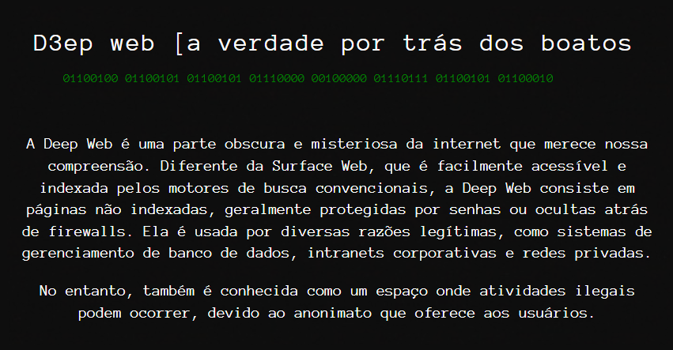

Qualificações
Estudante do primeiro período de Ciências da Computação em busca de uma oportunidade de emprego.
Escolaridade
Ciências da Computação - Unimetrocamp Wyden
Agosto- 2023 - cursando
SENAI Roberto Mange
Jan 2020 - Dez 2022
Curso de Desenvolvimento de Sistemas ministrado pelo SENAI em parceria com a empresa Bosch Campinas
Cursos de Aprimoramento
Pacote Office (Windows, Word, Excel, Power Point) e Internet
Inglês - Fluente
Fundamentos de programação
Fundamentos de TI: Hardware e software
Curso de Java
Experiência profissional:
Bosch Campinas - Técnico em Desenvolvimento de Sistemas (JUL 2023- ATUAL)
Atuo na empresa como aprendiz técnico de desenvolvimento de sistemas, buscando inovações na área de tecnologia e aplicação de automatizações
Projeto web tem como objetivo criar e desenvolver uma página web interativa e informativa sobre contar as verdades sobre a deep web. A página servirá como uma plataforma para fornecer informações relevantes e envolventes aos visitantes, bem como demonstrar as habilidades em desenvolvimento web, incluindo HTML5, CSS e, opcionalmente, JavaScript.
Projetada com foco na usabilidade e acessibilidade, garantindo que os visitantes possam navegar facilmente pelo conteúdo e acessar informações de forma clara e eficaz. O projeto também pode incluir elementos de design responsivo para garantir que a página seja acessível em diversos dispositivos, como computadores desktop, tablets e smartphones.
Registros do projeto:
